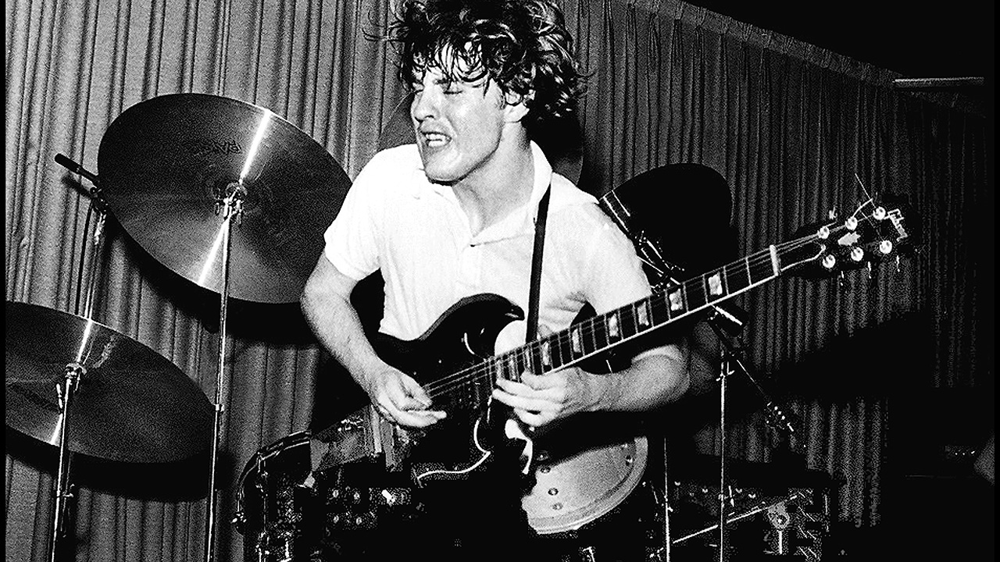

- High Voltage é o primeiro álbum da banda australiana de Hard Rock AC/DC, lançado em apenas na Austrália. O primeiro
lançamento internacional em também seria chamado - High Voltage, embora com uma lista de faixas
radicalmente diferente.
Em novembro de , os guitarristas Malcolm Young e Angus Young,
formaram o AC/DC e recrutaram o baixista Larry Van Kriedt, o vocalista Dave Evans e Colin Burgess, ex- baterista do Masters Apprentices. Logo os irmãos Young decidiram
que Evans não era um vocalista adequado para o grupo; Eles achavam que ele era mais um roqueiro Glam como Gary Glitter. A banda gravou apenas um single com Evans, "Can I Sit Next To You Girl".
Em , Ronald Belford Bon Scott, um experiente vocalista e amigo do produtor George Young, substituiu Dave Evans. A adição de Scott redefiniu a banda; Assim como os irmãos Young, Scott nasceu na Escócia antes de emigrar para a Austrália na infância e amava o Rock and Roll,
especialmente Little Richard. Em uma entrevista de para Mojo's Sylvie Simmons, Angus Young lembrou que Scott "moldou
o caráter do AC/DC... Tudo se tornou mais realista e direto. Foi quando nos tornamos uma banda".
- High Voltage foi originalmente lançado pela Albert Productions apenas na Austrália, e nunca foi relançado por outra gravadora neste formato. A versão internacional de High Voltage,
que foi lançada pela Atlantic Records em , tem uma capa e lista de faixas diferentes, com apenas "She Got Balls" e "Little Lover" aparecendo
no álbum. "
Stick Around" (sobre a incapacidade de Scott de se segurar em uma amante por mais de uma noite) e "Love Song" foram relançados na - Backtracks em
.
O título e a arte foram sugestão de Chris Gilbey, da Albert Productions.
Na biografia de Scott de , "Highway to Hell", Gilbey explica que: É tão manso agora, mas naquela época pensávamos que era bastante revolucionário
O álbum foi gravado em e teve seu Lançamento em ;
O álbum atingil certificação:
Nivel
Álbuns Vendidos
5X Platina
+ 350.000 (Austrália)
Duração do álbum: 39 min. 51 seg.
Gravadora(s): Albert Productions.
Produção: Harry Vanda e George Young.
Ronald Belford Scott ( — ) foi um cantor
e compositor australiano nascido na Escócia. Ele ficou mundialmente conhecido por ser vocalista e compositor da banda de Rock australiana AC/DC de a .
Em , a revista Hit Parader colocou Scott como o quinto melhor vocalista de Heavy Metal de todos os tempos.
Angus McKinnon Young () é um guitarrista e compositor, conhecido por ser guitarrista solo, compositor,
líder e co-fundador da banda AC/DC.
No ano de , foi introduzido juntamente com outros membros do AC/DC no Rock and Roll Hall of Fame. Foi considerado o 24.º melhor guitarrista de todos os tempos
pela revista norte-americana Rolling Stone.
Malcolm Mitchell Young ( — ) foi um
guitarrista e compositor escocês naturalizado australiano e fundador, junto com seu irmão mais novo Angus Young, do AC/DC, da qual era o guitarrista rítmico, vocalista de apoio e compositor.
Em 2014 Malcolm Young afastou-se da banda por estar sofrendo de demência. Morreu em , aos 64 anos.
 Rob Bailey é um ex-baixista do AC/DC. Ele juntou-se à banda em .
Bailey foi integrante da banda apenas durante a gravação de seu álbum de estreia - High Voltage e para vídeo Last Picture Show Theatre de "Can I Sit Next To You".
Após sua saída, o AC/DC não teve um baixista regular até a chegada de Mark Evans em .
Tony Currenti é um baterista australiano mais conhecido como baterista de sessão do AC / DC (álbum de estreia de
High Voltage, e do single "High Voltage".
Depois de gravar o álbum, Currenti foi convidado a se juntar ao grupo, mas recusou por 2 motivos; 1 - Currenti era leal à sua banda atual Jackie Christian & Flight; e 2 - Ele era um cidadão italiano;
com um passaporte italiano que não permitia que ele viajasse livremente pela Inglaterra ou Europa com a banda.
George Redburn Young ( - ) foi um
músico, compositor e produtor musical australiano. Ele foi membro fundador das bandas
Easybeats e Flash and the Pan, e foi metade da dupla de compositores e produção Vanda & Young com seu colaborador musical de longa data Harry Vanda.
 Ronald Belford Scott ( — ) foi um cantor
e compositor australiano nascido na Escócia. Ele ficou mundialmente conhecido por ser vocalista e compositor da banda de
Ronald Belford Scott ( — ) foi um cantor
e compositor australiano nascido na Escócia. Ele ficou mundialmente conhecido por ser vocalista e compositor da banda de  Angus McKinnon Young () é um guitarrista e compositor, conhecido por ser guitarrista solo, compositor,
líder e co-fundador da banda AC/DC.
Angus McKinnon Young () é um guitarrista e compositor, conhecido por ser guitarrista solo, compositor,
líder e co-fundador da banda AC/DC.
 Malcolm Mitchell Young ( — ) foi um
guitarrista e compositor escocês naturalizado australiano e fundador, junto com seu irmão mais novo Angus Young, do AC/DC, da qual era o guitarrista rítmico, vocalista de apoio e compositor.
Malcolm Mitchell Young ( — ) foi um
guitarrista e compositor escocês naturalizado australiano e fundador, junto com seu irmão mais novo Angus Young, do AC/DC, da qual era o guitarrista rítmico, vocalista de apoio e compositor.
 Tony Currenti é um baterista australiano mais conhecido como baterista de sessão do AC / DC (álbum de estreia de
Tony Currenti é um baterista australiano mais conhecido como baterista de sessão do AC / DC (álbum de estreia de
 George Redburn Young ( - ) foi um
músico, compositor e produtor musical australiano. Ele foi membro fundador das bandas
George Redburn Young ( - ) foi um
músico, compositor e produtor musical australiano. Ele foi membro fundador das bandas